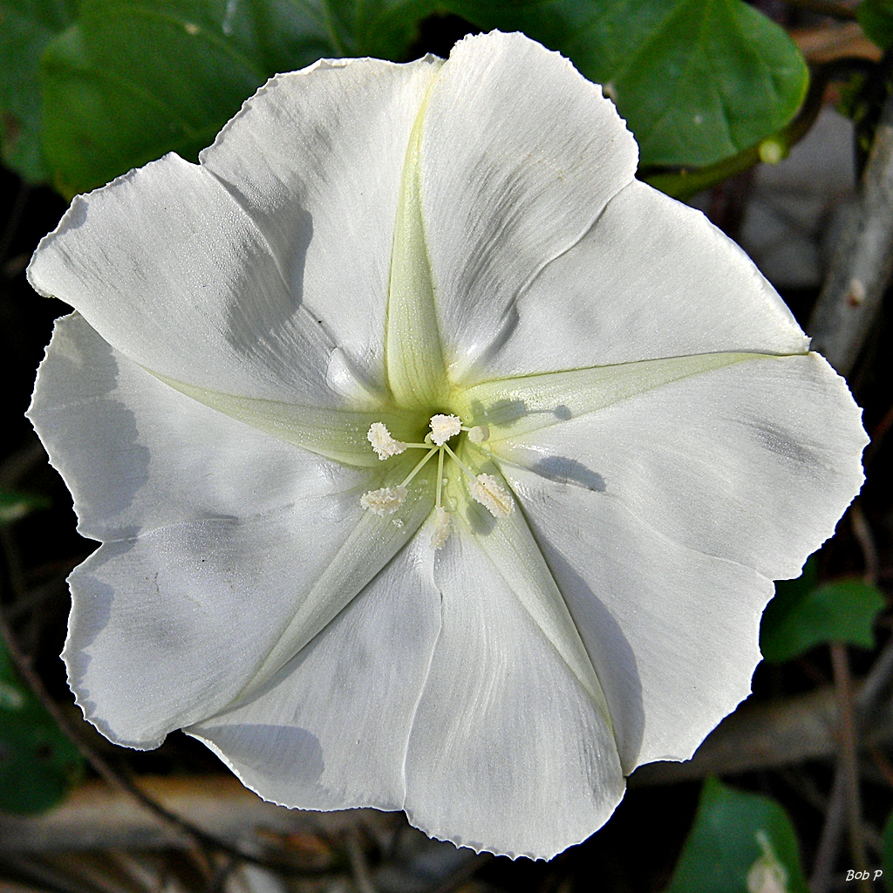
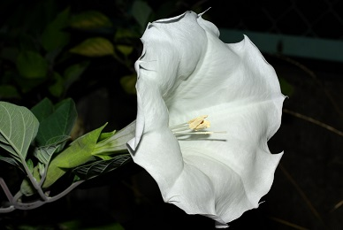
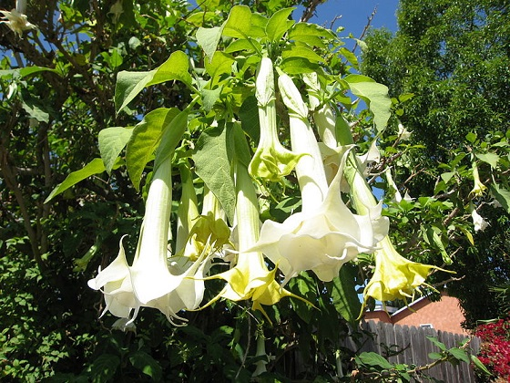
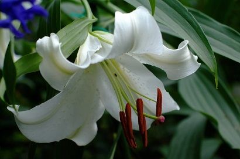

- GrowMoongarden Witch GardenConcoctIngredients Uses
Moon Gardens
Moon gardens can be an enchanting addition to a small area where you spend evening hours, like a porch or patio.

Essentially, any large, white flower that picks up low light is appropriate, but some flowers like the classic moonflower and four o' clock only bloom at night.

The Devil's Trumpet, or Datura plant is sometimes called a moonflower, however, it's quite different than the climbing flower that ascends trellises. The datura is an extermely poisonous plant with hallucinagenic properties. Due to its huge, white bloom it is perfect for a moongarden that is kept away from animals and children. The hallucinagenic expirence that can occur - sometimes even from deeply sniffing the flower - is said to not be pleasurable, but rather more like a Hellish waking nightmare. Some South American tribes have used the plant as a punishment for naughty children. It has also been used in Witchcraft along with The Angel's Trumpet, Brugmansia as a flying potion as it induces powerful "hallucinations" of flying... It can be propogated by seed (the pods of which look like medival maces) though, I have not had much luck, myself, my mom has been able to get them to germinate. Strangly, I have found them for sale at Pink Grizzly Nursery in Missoula labeled simply as Moon Flowers.  Angel's Trumpets, or Brugmansia is also highly poisonous. Thier scent is extremely sweet. I didn't really understand the meaning of "cloying" until I had one on my patio. Named so because its trumpet shaped blooms dangle from above rather that shoot up from below, the Angel's Trumpet also possesses a huge, white bloom suitable for night enjoyment and sickeningly sweet scent isn't released until nightfall. The sweet name and scent is deceptive, though; it's just as deadly poisonous as the Devil's Trumpet.  The Casablanca Lily is an innocuous alternative to these gorgerous, chunky flowers for those with curious pets or children. Other good choices for night gardens are: evening scented stock, evening primrose, and flowering tobacco.